Pierwsze krokiFirst steps
Zaczynasz na leśnej polanie z ogniskiem i garstką osadników. Pierwsze dni to fundamenty: dach nad głową, jedzenie i drewno na kolejne budowy.You start in a forest clearing with a campfire and a handful of settlers. The first days are about the basics: a roof over their heads, food and wood for the next builds.
Wioska żyje także, gdy nie grasz. Po powrocie dostaniesz raport z tego, co się wydarzyło.The village lives on while you're away. When you come back, you get a report of what happened.
Surowce i magazynyResources and storage
Pięć surowców napędza całą osadę. Każdy ma swój magazyn, który rośnie razem z poziomem budynku produkcyjnego. Nadmiar przepada, więc warto wydawać na bieżąco.Five resources power the whole settlement. Each has its own storage that grows with the level of its production building. Anything over the cap is lost, so spend as you go.
| SurowiecResource | Kto zdobywaGathered by | Na coUsed for |
|---|---|---|
| 🪵 DrewnoWood | Drwal w tartakuLogger at the sawmill | Prawie każdy budynek, palisady, łukiAlmost every building, palisades, bows |
| 🪨 KamieńStone | Górnik w kopalniMiner at the quarry | Warsztaty, wieże, ulepszanie sprzętuWorkshops, towers, gear upgrades |
| 🌾 ŻywnośćFood | Rolnik na farmieFarmer at the farm | Sytość osadników, tawernaSettlers' fullness, the tavern |
| 🪙 ZłotoGold | Wyprawy, handel, nagrodyExpeditions, trade, rewards | Kuźnia, jubiler, alchemikForge, jeweller, alchemist |
| 🔬 NaukaScience | Uczony w biblioteceScholar at the library | Badania, ulepszanie sprzętuResearch, gear upgrades |
| 💎 DiamentyDiamonds | Bossowie, zadania, kalendarz, sklepBosses, quests, calendar, shop | Przyspieszenia, jaja, wygodySpeed-ups, eggs, conveniences |
18 budynków18 buildings
Każdy budynek można rozbudowywać na kolejne poziomy, a większość ma też własne drzewko ulepszeń, np. tartak: +15% drewna, większy magazyn, potem +30%. Koszt poniżej dotyczy pierwszego poziomu.Every building can be levelled up, and most have their own upgrade tree too, e.g. the sawmill: +15% wood, more storage, then +30%. The cost shown is for level one.
OsadnicySettlers
Każdy osadnik ma imię, poziom i doświadczenie oraz cztery paski: zdrowie, sytość, nastrój i doświadczenie. Głodny i smutny pracuje gorzej, ranny trafia do szpitala. Większość ma jedną zaletę i często jedną wadę.Every settler has a name, a level and experience, plus four bars: health, fullness, mood and experience. The hungry and unhappy work worse, the wounded go to the hospital. Most have one strength and often one flaw.
ZawodyJobs
DrwalLogger
Tartak · drewnoSawmill · wood
GórnikMiner
Kopalnia · kamieńQuarry · stone
RolnikFarmer
Farma · żywnośćFarm · food
UczonyScholar
Biblioteka · naukaLibrary · science
StrażnikGuard
Koszary · obrona nocąBarracks · night defence
MedykMedic
Szpital · leczenieHospital · healing
AlchemikAlchemist
Pracownia · miksturyWorkshop · potions
NajemnikMercenary
Nowi ludzie z tawerny, codziennie inniNew people from the tavern, different every day
12 cech charakteru12 traits
Tawerna i ława najemnychThe tavern and mercenary bench
Codziennie przychodzą nowi chętni z gotowym zawodem, poziomem i cechami. Lepsza tawerna to więcej kandydatów (do 5 dziennie). Pierwsi są za darmo, ale potrzebujesz wolnych łóżek.New recruits arrive every day with a job, a level and traits. A better tavern means more candidates (up to 5 a day). The first ones are free, but you need free beds.
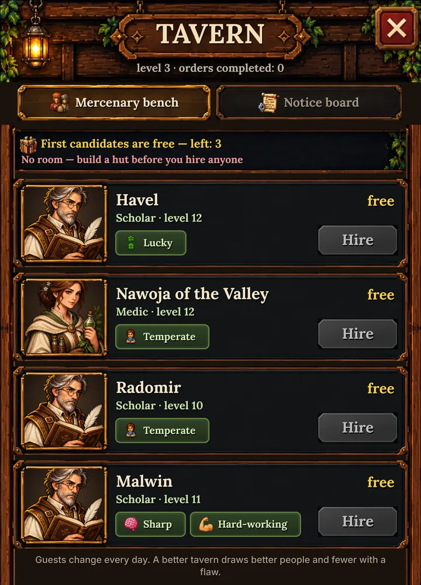
Pory rokuSeasons
Rok w Emberhold ma 32 dni, po 8 na każdą porę. Zmienia się wygląd świata i to, ile dają pola, las i kopalnia.A year in Emberhold lasts 32 days, 8 per season. The world changes its look, and so does the output of fields, forest and quarry.
| PoraSeason | 🌾 | 🪵 | 🪨 | RadaTip |
|---|---|---|---|---|
| 🌱 WiosnaSpring | +20% | 0% | 0% | Rozbudowuj farmyExpand farms |
| ☀️ LatoSummer | +35% | +10% | +5% | Najlepszy czas na zapasyBest time to stock up |
| 🍂 JesieńAutumn | −15% | +15% | 0% | Drewno na zimęWood for winter |
| ❄️ ZimaWinter | −70% | −25% | −20% | Żyj z zapasówLive off your stores |
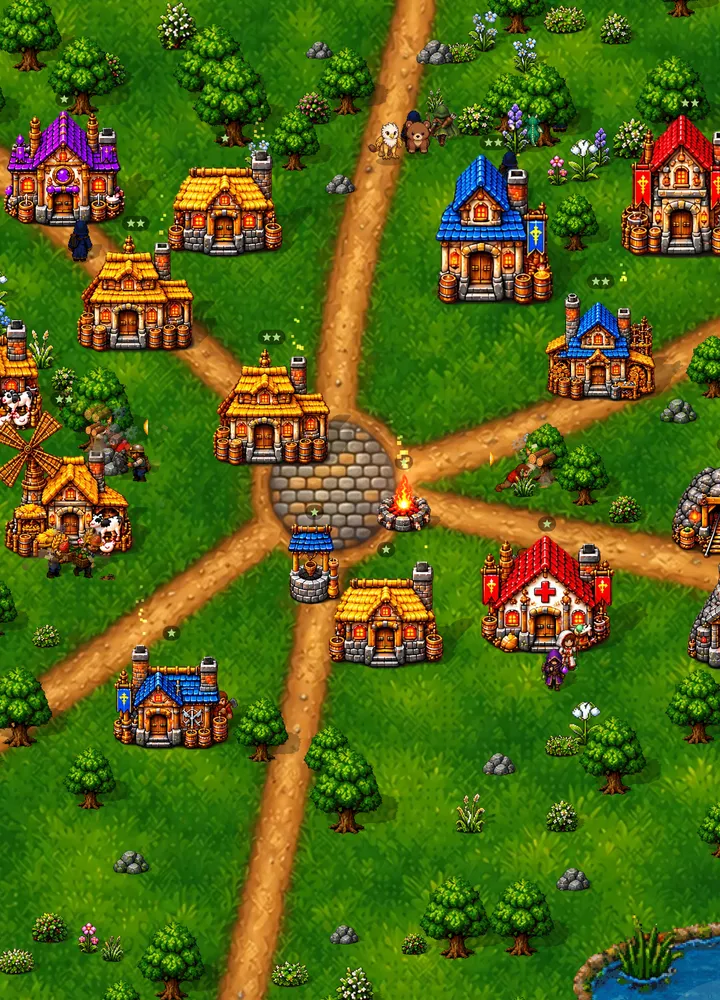
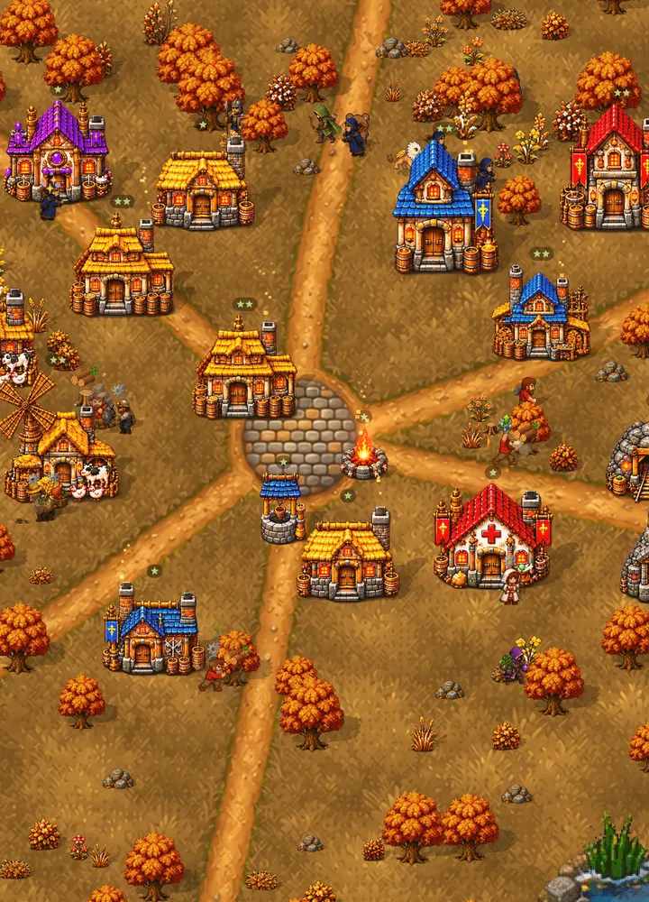
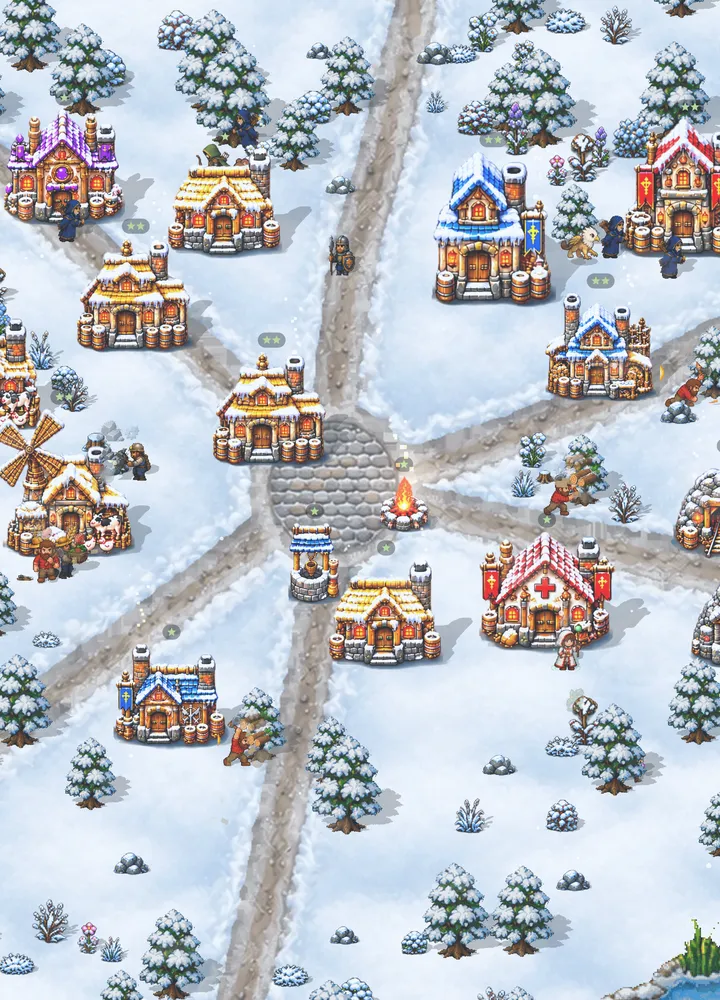
Noc i obronaNight and defence
Po zmroku przychodzą wilcze watahy i zbóje. Twoja obrona to warstwy:After dark come wolf packs and raiders. Your defence is built in layers:
- 🪵PalisadaPalisadeZatrzymuje wilki. 120 wytrzymałości na poziom. Uszkodzona wymaga naprawy.Stops wolves. 120 durability per level. Damaged sections need repair.
- 🏹WieżaTowerStrażnik na wieży strzela z góry z większym zasięgiem (×1,9 na 1. poziomie i więcej z każdym kolejnym).A guard on a tower shoots from above with extra range (×1.9 at level 1 and more with every level).
- 🪤WnykiTrapsTanie i jednorazowe: 40 obrażeń na poziom dla pierwszego wilka, który wejdzie.Cheap and single-use: 40 damage per level to the first wolf that steps in.
- 🛡️Koszary i strażnicyBarracks and guards+5 obrony wioski na poziom. Strażnicy walczą wręcz albo z łuku.+5 village defence per level. Guards fight in melee or with bows.
- 🐾PetyPetsPet stoi przy właścicielu i używa swoich zdolności: zionie ogniem, zamraża, leczy.A pet stays by its owner and uses its abilities: breathing fire, freezing, healing.
- 🏥SzpitalHospitalRanni wracają do zdrowia szybciej: +12% szans na wyleczenie na poziom.The wounded recover faster: +12% recovery chance per level.
Bohaterowie, klasy i specjalizacjeHeroes, classes and specialisations
Osadnik, który zdobędzie doświadczenie w walce, może zostać bohaterem. Najpierw wybiera klasę, potem jedną z dwóch specjalizacji. Każda ma trzy własne umiejętności.A settler who gains combat experience can become a hero. First they choose a class, then one of two specialisations, each with three unique skills.
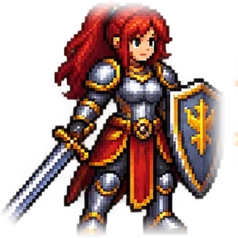
⚔️ WojownikWarrior
Staje w pierwszym szeregu i przyjmuje ciosy na siebie.Stands in the front line and takes the blows.
RycerzKnight: uderza pierwszy i najmocniej.strikes first and hardest.
ObrońcaDefender: osłania swoich i odbija ciosy.shields allies and reflects blows.
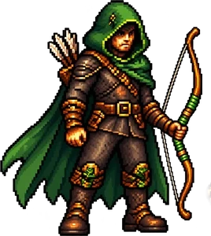
🏹 AsasynAssassin
Razi z dystansu, zanim wróg zdąży podejść.Strikes from range before the enemy gets close.
SnajperSniper: jeden strzał, jeden wróg.one shot, one enemy.
ŁowcaHunter: zna trucizny i zna las.knows poisons and knows the forest.
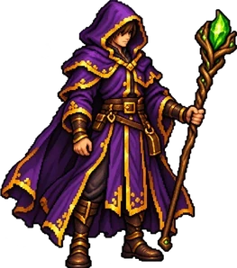
🔮 MagMage
Włada mocą, której reszta wioski nie rozumie.Wields a power the rest of the village doesn't understand.
UzdrowicielHealer: trzyma wioskę przy życiu.keeps the village alive.
CzarodziejSorcerer: ogień, grom i lód na rozkaz.fire, thunder and ice on command.
Karta bohateraHero sheet
Siła, wytrzymałość, praca i obrona. Do tego siedem miejsc na sprzęt: broń, hełm, zbroja, tarcza, buty, amulet i pierścień oraz jedno miejsce na peta.Power, endurance, work and defence. Plus seven gear slots: weapon, helmet, armour, shield, boots, amulet and ring, and one pet slot.
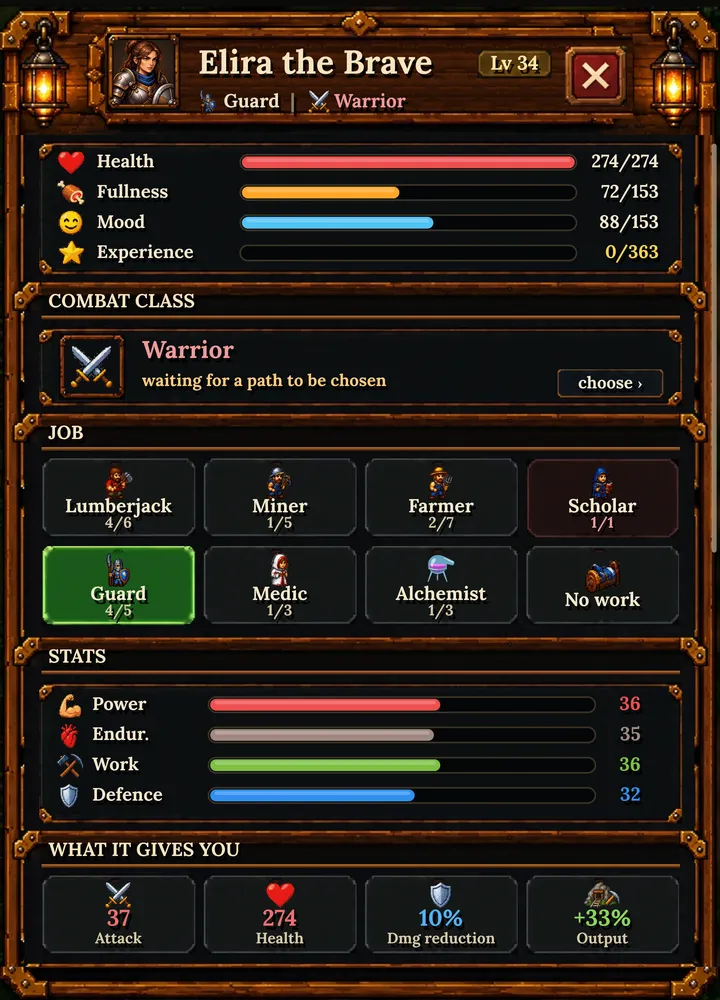
Ekwipunek i kuźniaGear and the forge
Podstawowy sprzęt wykuwają warsztaty: brońmistrz, zbrojownia i jubiler. Ich poziom decyduje o tym, jak dobre przedmioty powstaną. Rzadsze klasy mają mocniejsze statystyki:Basic gear is made in the workshops: weaponsmith, armoury and jeweller. Their level decides how good the items are. Rarer classes have stronger stats:
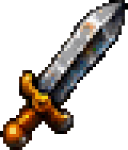
ZwykłyCommon
×1,00
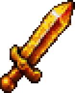
UnikatowyUnique
×1,30
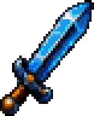
HeroicznyHeroic
×1,70

LegendarnyLegendary
×2,30
Ulepszanie: od +1 do +9Upgrading: from +1 to +9
Każdy plus to +15% do wszystkich statystyk. Ulepszenie zawsze się udaje, ale kuźnia poziomu 1 pozwala dojść tylko do +2, poziomu 2 do +4 itd. Mistrzowskie +9 wymaga kuźni poziomu 5. Przedmiot +9 świeci barwą swojej klasy.Each plus adds +15% to all stats. An upgrade always succeeds, but a level 1 forge only goes up to +2, level 2 up to +4 and so on. A master +9 needs a level 5 forge. A +9 item glows in the colour of its class.
ŁączenieMerging
Trzy przedmioty tego samego rodzaju łączysz w jeden, klasę wyżej. Szansa rośnie z poziomem kuźni. Heroiczny i legendarny sprzęt nadal najpewniej zdobędziesz w lochu i na wyprawach.Merge three items of the same kind into one, a class higher. The chance grows with forge level. Heroic and legendary gear is still most reliably found in dungeons and on expeditions.
PrzetapianieSmelting
Niepotrzebny przedmiot oddaje złoto i naukę. Rzadsze przedmioty zwracają więcej.An unwanted item gives back gold and science. Rarer items return more.
Wypróbuj symulator kuźni na stronie głównej.Try the forge simulator on the home page.
⚒️ Do kuźniTo the forgePetyPets
Zbuduj zagrodę, a otworzy się świat petów. Pet przypisany do osadnika chodzi za nim i walczy u jego boku w wiosce i w lochu. Jego siła zależy od rangi, gwiazdek i poziomu właściciela.Build a pet yard and the world of pets opens up. A pet assigned to a settler follows them and fights by their side in the village and the dungeon. Its strength depends on rank, stars and the owner's level.
Jaja i inkubatorEggs and the incubator
| JajoEgg | CzasTime | C | B | A | S |
|---|---|---|---|---|---|
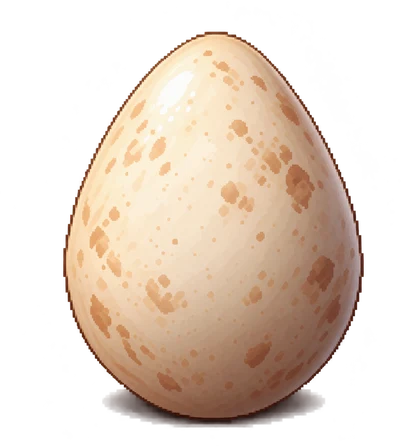 ZwykłeCommon | 15 min | 70% | 27% | 3% | — |
 SrebrneSilver SrebrneSilver | 1 h | — | 70% | 29,5% | 0,5% |
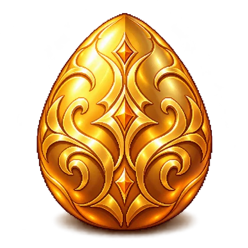 ZłoteGolden | 3 h | — | 30% | 67% | 3% |
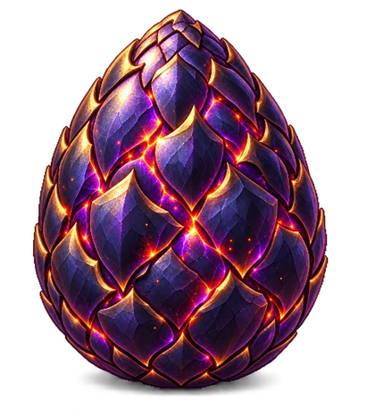 SmoczeDragon | 6 h | — | 25% | 60% | 15% |
Inkubator startuje z jednym miejscem. Ulepszysz go do 4 miejsc za esencję, kryształy i pióra. Jaja zdobywasz z wypraw, lochów, nagród i wydarzeń.The incubator starts with one slot. Upgrade it to 4 slots with essence, crystals and feathers. You get eggs from expeditions, dungeons, rewards and events.
W zagrodzie masz cztery zakładki: Wyklucie, Bestiariusz (kolekcja wszystkich gatunków), Rozwój i Wypuszczenie.The pet yard has four tabs: Hatch, Bestiary (a collection of every species), Growth and Release.
Rozwój: gwiazdkiGrowth: stars
Połącz dwa pety tego samego gatunku, a zostanie jeden, o gwiazdkę silniejszy (do ★5). Każda gwiazdka to +15% ataku i mocniejsze zdolności. Wiele gatunków zmienia też wygląd. Koszt w esencji rośnie z gwiazdkami i rangą.Merge two pets of the same species to get one that is a star stronger (up to ★5). Each star adds +15% attack and stronger abilities. Many species also change their look. The essence cost grows with stars and rank.
Wypuszczenie: pet odchodzi do lasu i zostawia esencję oraz odłamek jaja. 10 odłamków składa się w nowe jajo.Releasing: the pet returns to the forest and leaves essence plus an egg shard. 10 shards make a new egg.
Wszystkie 32 gatunkiAll 32 species
Zdolności petówPet abilities
Wyprawy po mapie świataWorld map expeditions
Wokół Twojej wioski rozciąga się mapa: wilcze legowiska, mglista wieża, opuszczony obóz, stare ruiny, smocze gniazda i wrogie osady. Wyślij drużynę, a po powrocie przyniesie łupy, surowce i doświadczenie. Im dalej, tym groźniej i bogaciej.Around your village stretches a map: wolf dens, a misty tower, an abandoned camp, old ruins, dragon nests and rival settlements. Send a party and it returns with loot, resources and experience. The farther you go, the more dangerous and the richer it gets.
Szczęściarz w drużynie przynosi lepsze łupy, a odważny nie wycofa się przy pierwszym ataku.A lucky settler in the party brings better loot, and a brave one won't retreat at the first attack.
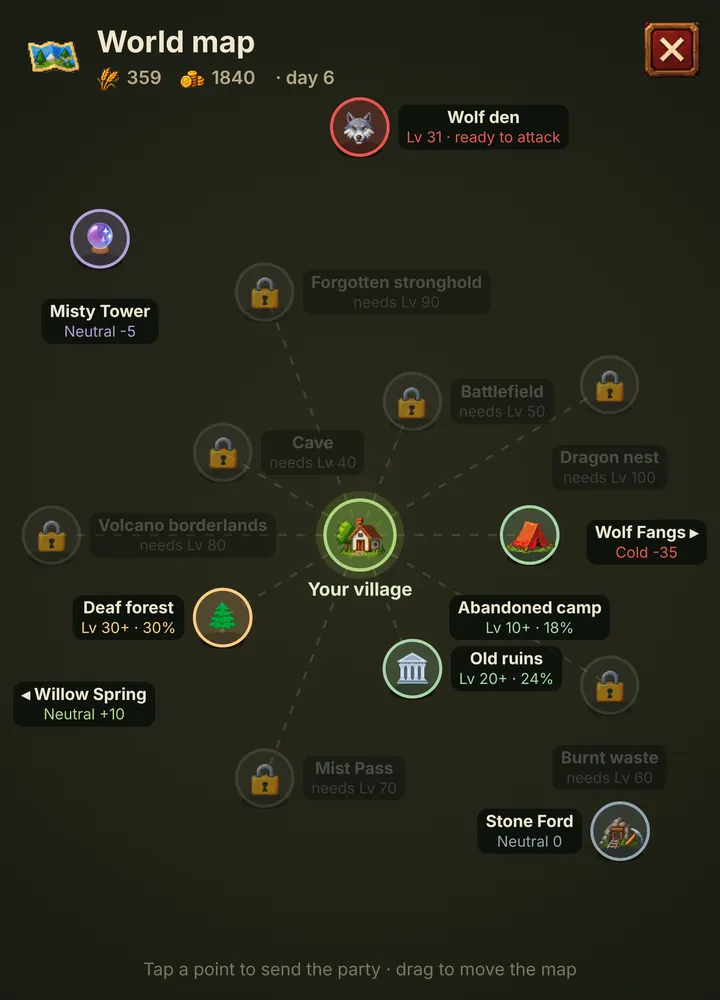
Lochy i bossowieDungeons and bosses
Loch to schodzenie piętro po piętrze. Na rozdrożach wybierasz ścieżkę. Wrogowie na niższych piętrach są coraz silniejsi: nietoperze, szkielety, mimiki, piekielne ogary, licze, upiory. Co kilka pięter czeka boss.A dungeon means going down floor by floor. At crossroads you choose a path. Enemies get stronger the deeper you go: bats, skeletons, mimics, hellhounds, liches, wraiths. Every few floors a boss awaits.
- 🔯Pieczęć powrotuReturn sealNatychmiastowy powrót do wioski z całą sakwą łupów.Instant return to the village with the full loot bag.
- 🏃OdwrótRetreatMożesz uciec w każdej chwili, ale stracisz część łupu.You can flee at any time, but you'll lose part of the loot.
BadaniaResearch
Biblioteka nie daje procentów, od tego są ulepszenia budynków. Badania odblokowują rzeczy, których wcześniej nie było: lepsze klasy sprzętu, receptury mikstur i udogodnienia w lochu.The library doesn't give percentages, that's what building upgrades are for. Research unlocks things that didn't exist before: better gear classes, potion recipes and dungeon perks.
WarsztatyWorkshops
Probiernia: szansa na unikat przy wykuwaniu. Hartowanie: znikoma szansa na heroik. Pieczęć mistrza: muśnięcie legendy.Assay room: a chance of a unique when forging. Tempering: a slim chance of heroic. Master's seal: a touch of legendary.
AlchemiaAlchemy
Receptury bojowe: ogień grecki, mróz w butelce. Wsparcia: dym kojący, napar żelaznej woli. Gospodarskie: iskra pracy, deszcz wzrostu.Combat recipes: Greek fire, frost in a bottle. Support: soothing smoke, iron-will brew. Household: spark of work, rain of growth.
GłębinyDepths
Liny asekuracyjne: tańszy odwrót. Sztuka obozowania: postój leczy drużynę. Złamane pieczęcie: trzy przejścia na rozdrożu zamiast dwóch.Safety ropes: cheaper retreats. Art of camping: a rest heals the party. Broken seals: three paths at crossroads instead of two.
Diamenty, nagrody i sklepDiamonds, rewards and the shop
Emberhold jest darmowy. Diamenty zdobywasz za bossów, zadania i kalendarz codziennych nagród. W sklepie możesz je dokupić, a do tego przyspieszenia, pieczęcie powrotu i miejsca na kolejne osady (do trzech). To opcja, nie warunek: całą grę przejdziesz bez płacenia.Emberhold is free. You earn diamonds from bosses, quests and the daily reward calendar. The shop lets you buy more, plus speed-ups, return seals and slots for more settlements (up to three). It's an option, not a requirement: you can finish the whole game without paying.
Postęp zapisuje się w chmurze Google Play Games, więc po zmianie telefonu wioska czeka na Ciebie.Progress is saved to the Google Play Games cloud, so your village waits for you on a new phone.
Gotów rozpalić ognisko?Ready to light the fire?
Zarejestruj się wcześniej i odbierz w dniu premiery 200 💎 oraz srebrne jajo.Pre-register and get 200 💎 and a silver egg on launch day.
Zarejestruj się w Google PlayPre-register on Google Play